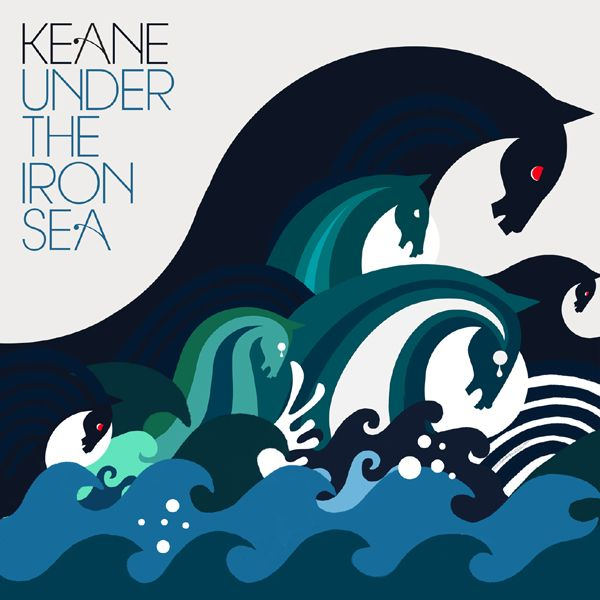
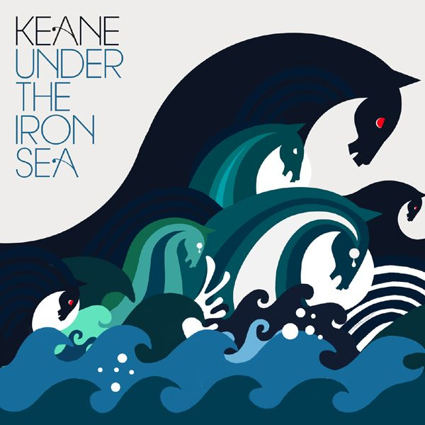

- The millenials: Muse
- The New Generation: Keane
With a very clever and stilish manner, Muse were able to combine the spirit of the old glorious bands from the sixties, with the new sounds of the twenty first century.

The vocals, and the lyrics of Keane, makes this band one of a kind in the array of bands existing around the world, Tom Chaplin's voice is unique, and has been compared with Freddy Mercury.
 
